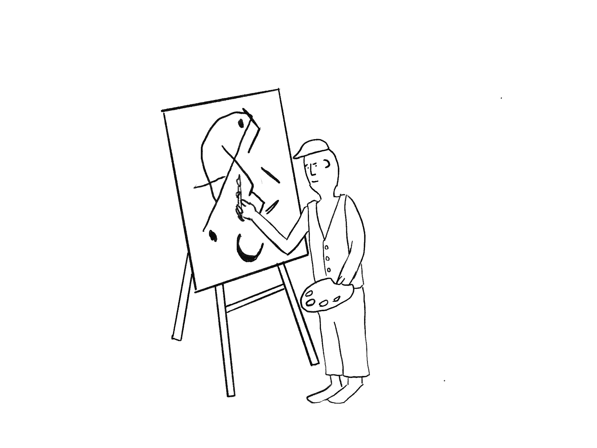

The Objects of Dissemination
This week I have chosen 10 objects that enable the dissemination of information.
They are as follows:
My outcome for this brief will be a hypothetical conspiracy theory against a new kind of energy source that relies on the decay of future time.
The chosen objects are all key objects in the sharing and communication of ideas. They are responsible for the progress of human thought as well as for its alleged regression. Most people would agree that conspiracy theories are often too outlandish and have also the ability to become dangerously influential. Some may be harmless such as the Flat Earth Society but take for example the idea that vaccinations will cause autism. These ideas cause real tangible effects and human suffering.
However, a healthy amount of critical thinking is required to navigate today’s world of information. The information era in which the new objects of disseminating information can actually hinder the progress of human thought and knowledge. What can we learn from conspiracy theories? Are they lessons is skepticism or an cautionary tale for the ubiquity of mass communication tools.
By looking at the value of these objects and considering their object biography I want to answer the question: What are the most effective tools for sharing ideas or spreading conspiracy theories?
Paintings were one of the first ways in which humans recorded and shared ideas. Pictograms were the first of many written languages as well. Paintings themselves have a very rich history and functional purpose from the expression of our perception and therefore proof of existence to commissioned oil paintings for rich patrons. However, in today’s age paintings are not the most efficient way to spread your ideas. If you were trying to create an old conspiracy, you could try to make links between imagery use in old paintings. For example, the existence of the illuminati triangle in lots of artworks. The physical engagement with a painting is important as it links you back in time to the moment the painting was made and connects you with its painter. So while it might not be the most effective at spreading a message it can create a strong impact for a concentrated audience.
Language is not necessarily an object but it is the tool that has allowed communication of complex ideas which lead to the progress of humanity. Language does not only allow one to convey information but it can be used to provoke, persuade or entertain. The method of how one uses language is very important for getting the audience to believe in the idea presented to them. Here the quality and quantity of language can also determine how widespread you can send a message. A shorter string of words may convey or point to different ideas very quickly but to get the depth of an idea across it will require a larger quantity and quality of words.
Paper has a tactile element that changes the perception of its contents. A certain kind of paper with more weight and better finish can convey a sense of importance. This can be vital in creating an aura of gravitas to an idea. For example an official document or the constitution of a particular nation will use a different paper from the one used in everyday settings. Documents printed on regular printer paper within the system of objects is far inferior in creating a impression on people. Still the use of lower quality paper is useful in disseminating ideas very quickly, to reproduce the same text in large quantities.
Ink is in this list to stand in for any kind of writing or mark making instrument. The quality of ink can change the way an idea is perceived. For example, printed ink from a inkjet printer won’t convey a sense of importance. Still ink inherently has a permanence to it, in that it cannot be rubbed off like a pencil mark. Books
back to topSun Min Kim | CSM | BAGCD | 2020